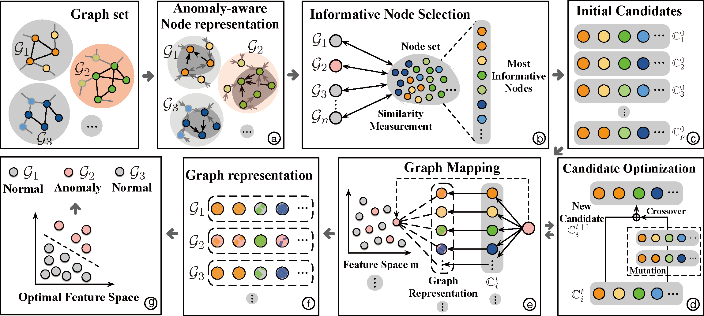
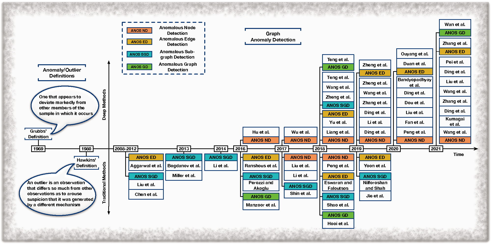
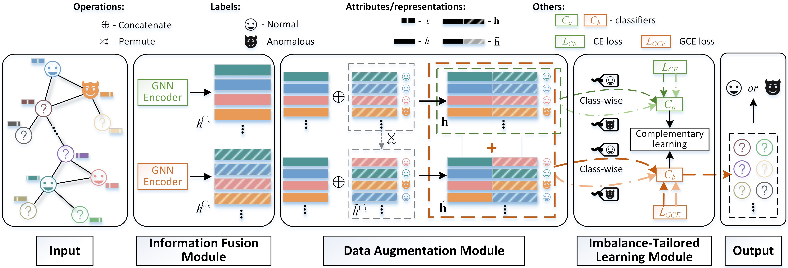
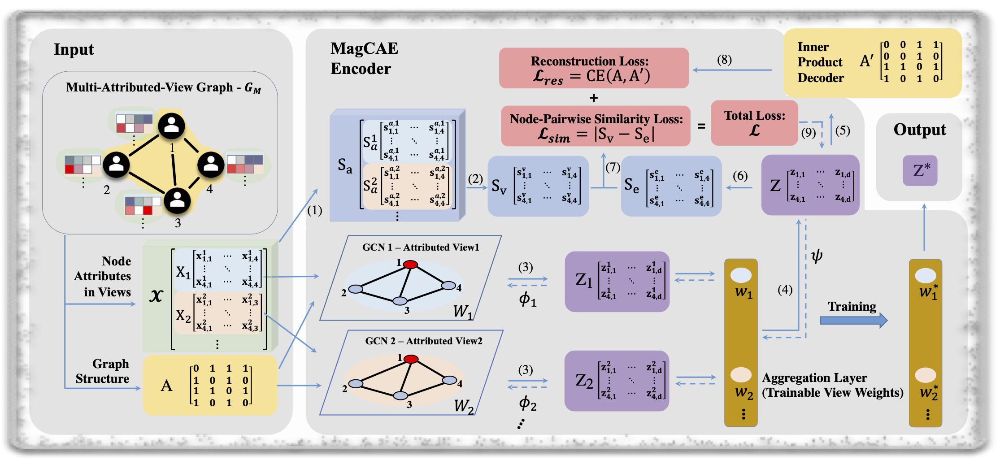

Education Background
| Degree | Major | University | Year |
|---|---|---|---|
| Doctor of Philosophy | Computing | Macquarie University | 2021.10 - Now |
| Master of Research | Computing | Macquarie University | 2020.01 - 2021.02 |
| Master of Information Technology | Computing | University of Melbourne | 2014.02 - 2014.12 |
| Bachelor of Software Engineering | Software Engineering | Tianjin University | 2006.09 - 2010.07 |
Work and Internship Experience
| Company/Organisation | Role | Year |
|---|---|---|
| Amazon, International Machine Learning | Applied Scientist Intern | 2024.04 - Now |
| Macquarie University, DataX Research Centre | Research Assistant | 2023.04 - 2023.12 |
| GenieUS Genomics | ARP.Intern | 2023.06 - 2023.10 |
| Data Centre of Ningxia | Senior Staff Member | 2018.10 - 2019.12 |
| Information and Data Management Center of HRSS Ningxia | Senior Staff Member | 2015.05 - 2018.10 |
| Ericsson (China) Communications Co.Ltd. | Integration Engineer | 2010.07 - 2013.09 |
My Publications
GmapAD [3]:

Graph Anomaly Detection [9]:

DAGAD [8]:

Multi-Attributed-View Representation [10]:

-
[1] [New] *Xiaoxiao Ma, Ruikun Li, Fanzhen Liu, Kaize Ding, Jian Yang, Jia Wu, “Graph Anomaly Detection with Few Labels: A Data-Centric Approach”, ACM SIGKDD CONFERENCE ON KNOWLEDGE DISCOVERY AND DATA MINING (KDD) 2024. [PDF] -
[2] [New] *Kaize Ding, *Xiaoxiao Ma, Yixin Liu, Shirui Pan, “Divide and Denoise: Empowering Simple Models for Robust Semi-Supervised Node Classification against Label Noise”, ACM SIGKDD CONFERENCE ON KNOWLEDGE DISCOVERY AND DATA MINING (KDD) 2024. *Equivalent First Author. [PDF] -
[3] Xiaoxiao Ma, Jia Wu, Jian Yang, Quan Z. Sheng, “Towards Graph-level Anomaly Detection via Deep Evolutionary Mapping”, ACM SIGKDD CONFERENCE ON KNOWLEDGE DISCOVERY AND DATA MINING (KDD) 2023. [PDF] [CODE] -
[4] *Yuchen Zhang, *Xiaoxiao Ma, Jia Wu, Jian Yang, Hao Fan, “Heterogeneous Subgraph Transformer for Fake News Detection”, International World Wide Web Conference (WWW) 2024. *Equivalent First Author. [PDF] -
[5] *Bingbing Xie, *Xiaoxiao Ma, Jia Wu, Jian Yang, Shan Xue, Hao fan, “Heterogeneous Graph Neural Network via Knowledge Relations for Fake News Detection”, SSDBM 2023. *Equivalent First Author. -
[6] Bilal Khan, Jia Wu, Jian Yang, Xiaoxiao Ma, “Heterogeneous Hypergraph Neural Network for Social Recommendation using Attention Network”, ACM Transactions on Recommender Systems 2023. -
[7] *Bingbing Xie, *Xiaoxiao Ma, Jia Wu, Jian Yang, Hao Fan, "Knowledge Graph Enhanced Heterogeneous Graph Neural Network for Fake News Detection", IEEE Transactions on Consumer Electronics, 2023. *Equivalent First Author. -
[8] *Fanzhen Liu, *Xiaoxiao Ma, Jia Wu, Jian Yang, Shan Xue, Amin Beheshti, Chuan Zhou, Hao Peng, Quan Z. Sheng, Charu C. Aggarwal, “DAGAD: Data Augmentation for Graph Anomaly Detection”, ICDM 2022. [PDF] *Equivalent First Author. -
[9] Xiaoxiao Ma, Jia Wu, Shan Xue, Jian Yang, Chuan Zhou, Quan Z. Sheng, Hui Xiong, Leman Akoglu, “A Comprehensive Survey on Graph Anomaly Detection with Deep Learning”, IEEE Transactions on Knowledge and Data Engineering (TKDE, CORE ranked A*, CCF A, Web of science impact factor: 4.935, Google H-index: 174), 2021. [PDF] [REPOSITORY] -
[10] Xiaoxiao Ma, Shan Xue, Jia Wu, Jian Yang, Cecile Paris, Surya Nepal, and Quan Z. Sheng. “Deep Multi-Attributed-View Graph Representation Learning”, IEEE Transactions on Network Science and Engineering (TNSE, JCR impact factor 5.213, Google H-index: 29), 2022. [PDF] [CODE] -
[11] Richard O. Sinnott, Jun Han, William Hu, Xiaoxiao Ma, Kuai Yu, “Application of Mobile Games to Support Clinical Data Collection for Patients with Niemann-Pick Disease”, IEEE 28th International Symposium on Computer-Based Medical Systems (CBMS), 2015. [PDF]
Hosted Project
Awesome Deep Graph Anomaly Detection [REPOSITORY]Awards
| Award | Organised By | Year |
|---|---|---|
| Executive Dean's Commendation for Academic Excellence in Year 2 Master of Research |
Macquarie University | 2021 |
| The Third (Silver Medal) in the 2nd Network Hacking Competition | Ningxia | 2018 |
| Award of Encouragement in the 1st Network Hacking Competition | Ningxia | 2017 |
| Information Technology Project Management Professional | P.R.C. | 2016 |
| Annual Best Staff | Ningxia | 2016 |
| Network Engineer Certification | P.R.C. | 2015 |
| Bronze Medal in The Tianjin Metropolitan Collegiate Programming Contest |
ACM | 2007 |
Research Activities
- Journal Reviewer
- IEEE Transactions on Pattern Analysis and Machine Intelligence
- IEEE Transactions on Knowledge and Data Engineering
- ACM Transactions on Knowledge Discovery from Data
- World Wide Web Journal
- IEEE Transactions on Emerging Topics in Computing
- IEEE Transactions on Neural Computing
- Journal of Information Science
- Neural Networks
- Conference Reviewer
- The ACM SIGKDD conference on Knowledge Discovery and Data Mining (KDD) 2024
- The IEEE International Conference on Data Mining (ICDM) 2021
- The ACM Conference on Web Search and Data Mining (WSDM) 2021
- The Conference on Information and Knowledge Management (CIKM) 2021
- The IEEE International Conference on Big Knowledge (ICBK) 2021
- International Joint Conference on Neural Networks (IJCNN) 2021, 2022
- The ACM SIGKDD conference on Knowledge Discovery and Data Mining (KDD) 2021
1. Use the Latex Template from https://github.com/vincentdoerig/latex-css. ↩
2. Feel free to contact me @my email
Copyright © 2023 - Forever Xiaoxiao Ma. All Rights Reserved.